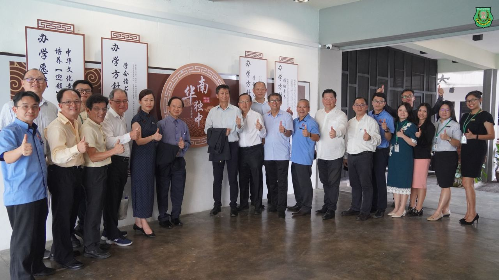
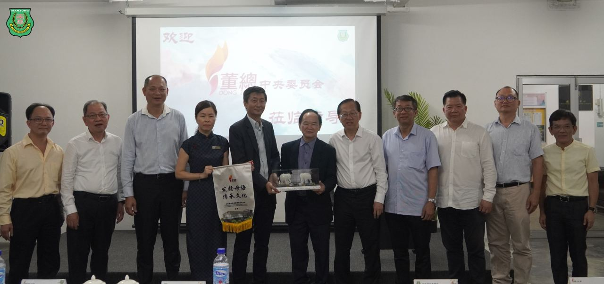
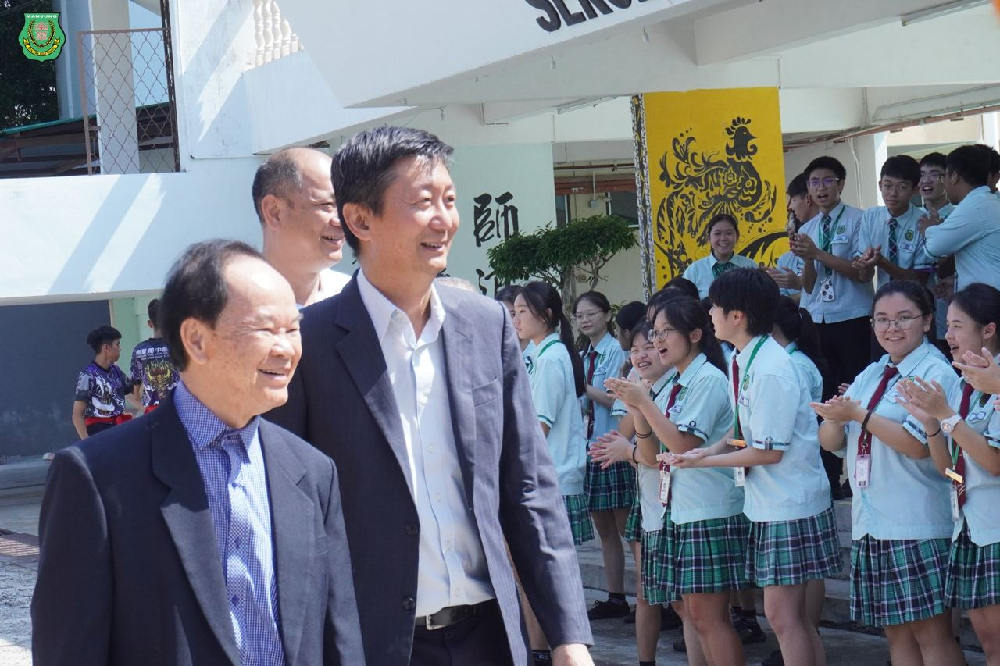
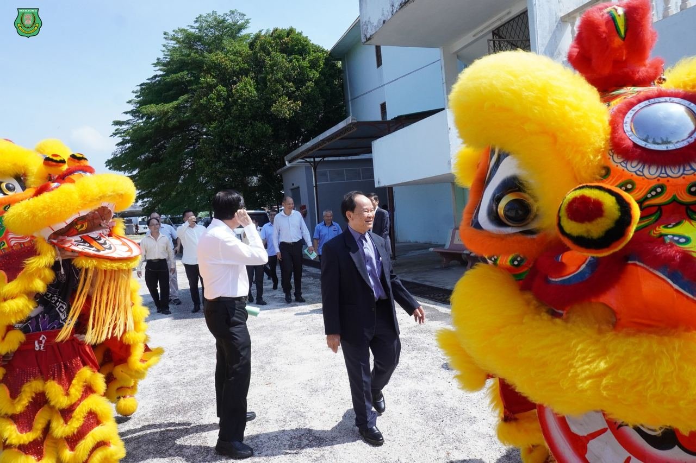
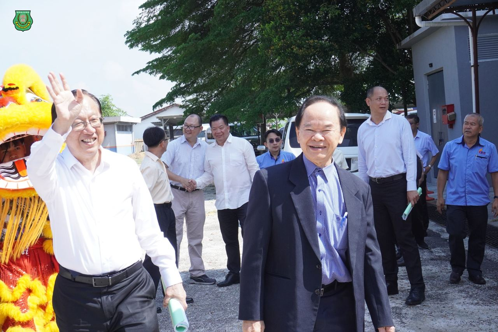
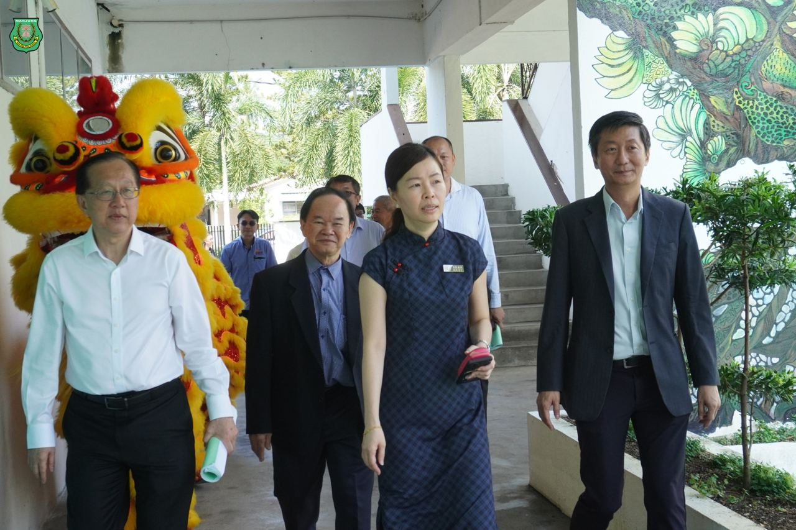
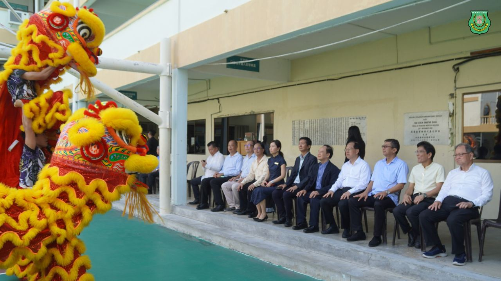

董总中央常委会莅临南华独中
董总中央常委会莅临南华独中
双方热烈交流华文教育课题
董总中央常委会主席陈大锦先生带领其团队于日前莅临拜访南华独中，双方针对现今华文教育课题展开热烈交流与讨论，为华文独中的学生共谋更多的发展机遇与未来。
南华独中董事长颜登逸先生强调，在未来多变的21世纪学生将要面对各种未知与变化的挑战，为此南华独中以“培养‘迎’领21世纪中华文化素养领袖人才”为愿景，致力培养具备学习热忱、独立思考、创意思维、强大心里素质、行动力、美感等多方位素养的学生，同时能从中华文化深厚的底蕴以及先贤中找到自己前进的道路。颜董事长表示“我们要教会学生学会审美，才会从生存走向生活”以清晰的办学理念指引学生走向康庄大道。
董总中央常委会主席陈大锦先生在致辞中表示，董总如今已迈入70年关卡，在华文教育的道路上始终坚守岗位，维护民族教育的立场与信念，此次到访主要目的是与教育前线者共商捍卫我国华文教育的前景，并尽最大的能力争取发展权利，让华文教育继续传承与发扬光大。
南华独中校长陈丽冰博士针对本校教改进行汇报时表示，教育改革若停留在理论与商讨的阶段首当其冲是耽误了学生的前途，为此本校自前年开始推行“五大领域·十八门校本课程”“技职教育”选修课，即便教改的路上砥砺前行，但本校董事会及老师们仍旧负重前行，如今校园文化与风气逐步成型，为学生开启通往更高格局的一扇窗。
在交流与讨论会结束后，董总中央常委会借此参观南华独中科技楼硬体设备与技职教育后，对南华独中完善的设备与走在教育改革前沿的技职教育赞誉有加。
#董总中央常委会 #华文教育 #教育改革
#南华独中 #曼绒 #实兆远






